Funksjonen \(O\) gitt ved \[O(x)=−0,05x^2 +100x−10 000\] er ein god modell for overskotet i kroner som ei bedrift har kvar veke, dersom ho produserer og sel \(x\) einingar av ei vare.
a) Bestem \(O'(500)\). Gi ei tolking av svaret i denne situasjonen
Deriverer \(O\) og finn \[ O'(x)=-0,1x+100 \] Dermed er \[O'(500)=-0,1 \cdot 500 + 100 = 50\]
Dette betyr at om ein aukar produksjonen (\(x\)) med ei vare, så vil overskotet auka med ca. 50 kr.
b) Kva er det maksimale overskotet denne bedrifta kan ha kvar veke?
Dette betyr at overskotet er størst (\(O(x)\) er ein konkav andregradsfunksjon \(\Rightarrow\) toppunkt) når det vert produsert 1000 einingar. Finn overskotet:
Denne kan løysast ved grenserekning (faktorisering eller L’Hôpital) men…
Ser av uttrykket at dette er definisjonen av den deriverte til \(x^2\) når \(x=4\). Dermed får me \[\begin{align*}
f(x)&=x^2 \\ f'(x) &= 2x \\ f'(4) &= 2\cdot 4 = 8 \end{align*} \]
Oppgåve 5
I ei krukke er det 2 kvite og 6 svarte kuler. Du skal tilfeldig trekkje 2 kuler utan tilbakelegging.
a) Bestem sannsynet for at minst éi av kulene er kvit.
Trekk 2 kuler. Utfalla me kan få er SS, SK, KS, KK. Viss me lar \(X\) vera tal kvite kuler trekt har me då
\[P(X\geq 1) = 1 - P(X=0)\]
der \[P(X=0) = \frac{6}{8}\cdot\frac{5}{7}=\frac{30}{56}=\frac{15}{28}\]
dermed får me \[P(X\geq 1)= 1 - \frac{15}{28} = \frac{13}{28}\]
I ei anna krukke ligg det eit ukjent tal kuler. Her er 2 av kulene kvite, mens resten av kulene er svarte. Du skal tilfeldig trekkje 2 kuler utan tilbakelegging. Du ønskjer at sannsynet for at du trekkjer 2 svarte kuler, skal være minst 50 prosent.
b) Lag ein algoritme som du kan bruke for å bestemme det minste talet på svarte kuler som det da må vere i krukka. Ta med nødvendige formlar som du må bruke for å følgje algoritmen.
La \(s\) vera talet svarte kuler og \(k\) talet kvite kuler.
\(k=2\) og \(s=2\) (sidan me må minst ha to svarte kuler i krukka)
finn sannsynet for å trekka 2 svarte kuler \(P(\text{to svarte}) = \frac{s}{s+k}\cdot\frac{s-1}{s-1+k}\)
Viss \(P(\text{to svarte}) <50%\) legg til ei svart kule og gjenta 2 og 3. Viss ikkje - gå til 4.
\(s\) er no det minste talet svarte kuler.
Del 2
Oppgåve 1
Undersøkingar viser at 70 prosent av kundane til ein butikk er turistar. Ein dag hadde butikken til saman 145 kundar. Legg nødvendige føresetnader til grunn, og bestem sannsynet for at minst 100 av desse kundane var turistar.
Her er det naturleg å legga til grunn at - sannsynet for at kvar kunde som kjem er turist eller ikkje er likt for alle kundane (70%) - Om ein kunde er turist eller ikkje er uavhengig om neste kunde er turist eller ikkje
\(T\): kunden er turist
Dermed har me ein situasjon med - delforsøk med to utfall (\(T\) eller \(\bar{T}\)) - likt sannsyn i alle delforsøka (\(P(T)=0,7\) og \(P(\bar{T})=1-0,7=0,3\)) - uavhengige delforsøk
Dette er ganske forenkla og i røynda vil nok ikkje dette vera uavhengige delforsøk, sidan turistar ofte opptrer i flokk 😄
Bruker først simulering for å bestemma sannsynet. Sjekkar opp mot sannsynskalkulatoren i GeoGebra etterpå.
Tips
Ta gjerne ein kikk på dette innlegget om du treng meir info om grunnleggande simulering med NumPy
import numpy as nprng = np.random.default_rng()N =1000000# tal simuleringarn =145# tal kundarp =0.7# sannsyn for turist# trekk kundarkundar = rng.binomial(n=n, p=p, size=N)# finn sannsynetgunstige =sum(kundar >=100)sannsyn = gunstige / Nprint(f"Sannsynet for at det var minst 100 turistar innom er {sannsyn:.4f}")
Sannsynet for at det var minst 100 turistar innom er 0.6454
I GeoGebra
Ser at svaret vert det samme i GG:
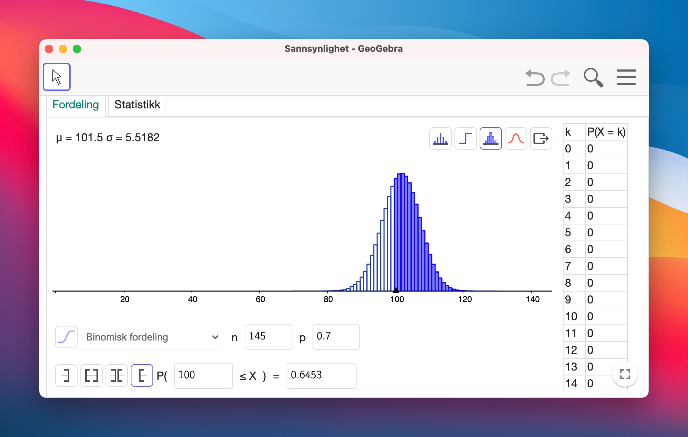
📷 Sannsynskalkulatoren i GeoGebra Classic 6
Oppgåve 2
Har fått oppgitt funksjonen
\[f(x)=1-x^2, \qquad D_f=[0, 1]\]
La \(a\in\langle 0, 1\rangle\) og \(O\) være origo. Tangenten til grafen til \(f\) i punktet \(P(a, f(a))\) skjer \(x\)-aksen i punktet \(A\) og \(y\)-aksen i punktet \(B\).
Bestem arealet av \(\triangle OAB\) når \(P\left(\frac{1}{2}, \frac{3}{4}\right)\)
Bruker CAS og finn arealet av trekanten
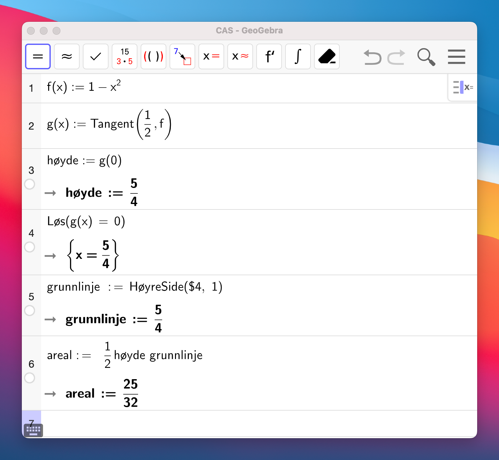
📷 Skjermbilete frå CAS
Arealet av trekanten er \(\frac{25}{32}\)
Bestem det minste arealet \(\triangle OAB\) kan ha
Gjer det samme som i (a) men med \(a\) som \(x\)-verdien til tangeringspunktet. Finn ein funksjon for arealet, og finn ekstremalpunktet til denne. Viser ved andrederiverttesten at det er eit botnpunkt.
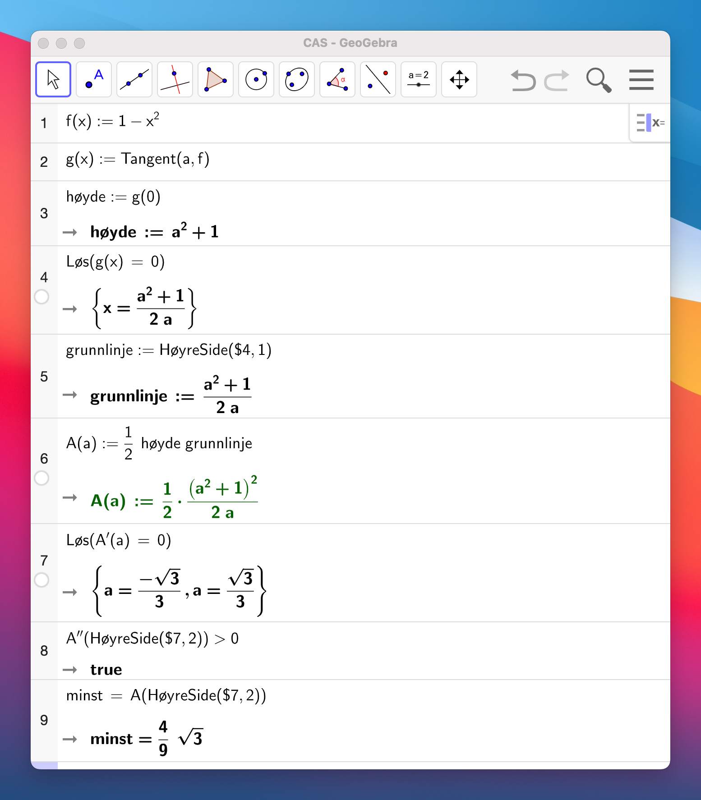
📷 Skjermbilete frå CAS
Det minste arealet trekanten kan ha er \(\frac{4}{9}\sqrt{3}\)
Oppgåve 3
Tabellen nedanfor viser verdien av den totale vareeksporten frå Noreg for nokre år i perioden 1980–2018.
Oppgåva ber først om to ulike modellar ein kan bruka for å seie noko om framtida. Det er litt krevjande med så få datapunkt og lite kunnskap om kva faktorar som spelar inn her.
Prøver heller å finna modellar som kan passa til dei datapunkta me har.
Startar med å legga inn punkta og plotta dei for å få oversikt.
import matplotlib.pyplot as pltimport numpy as npx = [0, 10, 20, 30, 38] # år etter 1980v = [91.7, 211.6, 529.8, 788.1, 1000.3] # verdi i mrd. kr.appendplt.plot(x, v, "ro")plt.show()
Prøver vidare å laga ein eksponentialfunksjon på forma \(g(x) = a\cdot b^x\) for å sjå om det kan passa med prosentvis auke.
from scipy.optimize import curve_fitdef eksp(x, a, b):return a * b**x# finn passande funksjonK, E = curve_fit(eksp, x, v)a_eksp, b_eksp = Kplt.plot(x, v, "ro")plt.plot(x_verdier, eksp(x_verdier, a_eksp, b_eksp))plt.show()# Skriv ut funksjoneuttrykketprint(f"f_eksp(x) = {a_eksp:.2f} + {b_eksp:.2f}^x")
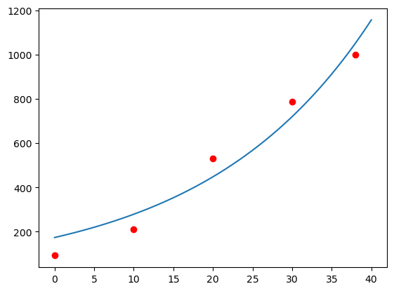
f_eksp(x) = 173.29 + 1.05^x
Plottar begge modellane med datapunkta i samme figur for å samanlikna.
plt.plot(x, v, "ko")plt.plot(x_verdier, lin(x_verdier), "r", label="f_lin")plt.plot(x_verdier, eksp(x_verdier, a_eksp, b_eksp), "b", label="f_eksp")plt.xlabel("År etter 1980")plt.ylabel("Verdi vareeksport i mrd. kr.")plt.legend()plt.show()
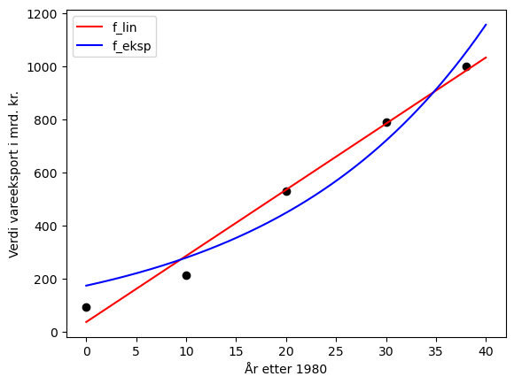
Det ser ut som om den lineære funksjonen passar best. Kallar denne for \(g\). \[ g(x) = 24.90x + 36.32\]
Vidare er me ute etter den gjennomsnittlege årlege veksten mellom 2015 og 2025 for dei to modellane.
snitt_lin = (lin(45)-lin(35))/10snitt_eksp = (eksp(45, a_eksp, b_eksp)-eksp(35, a_eksp, b_eksp))/10print(f"snitt lin: {snitt_lin:.2f} mrd.kr. pr. år\nsnitt eksp: {snitt_eksp:.2f} mrd.kr. pr. år")
snitt lin: 24.90 mrd.kr. pr. år
snitt eksp: 55.35 mrd.kr. pr. år
Funksjonen \(f\) gitt ved \[f(x)=91\cdot 1,057^x\] er ein modell for verdien av den totale vareimporten til Noreg i milliardar kroner, \(x\) år etter 1980 . Når vil verdien av vareimporten til Noreg vere 10 gonger større enn det han var i 1980?
Her må me løysa likninga \[1,057^x = 10\]
Bruker CAS i Python 😎
from sympy import*x = Symbol("x")# definerer likning (vs, hs) og løysereq = Eq(1.057**x, 10)løysing = solve(eq)print(f"x = {løysing[0]:.2f}")
x = 41.54
I 2022, 42 år etter 1980, er vareimporten (litt større enn) 10 gongar så stor som i 1980.
Dersom verdien av vareeksporten i eit land er større enn verdien av vareimporten, seier vi at landet har eit handelsoverskot.
Skal no finna ut kva tid det er handelsoverkot.
# definerer funksjonanedef imprt(x):return91*1.057**xdef eksprt(x): return24.90*x +36.32# lagar x-verdiarx = np.linspace(0, 50, 1000)# ser ca. kor dei kryssar kvarandre plt.plot(x, imprt(x), "r", label="import")plt.plot(x, eksprt(x), "g", label="eksport")plt.grid()# ca. verdi for det første skjæringspunktet, x1x_1 =2# finn x1while imprt(x_1) > eksprt(x_1): x_1 +=0.1# plottar linja og skriv utplt.axvline(x_1)print(f"Skjæringspunkt 1: {x_1:.1f}")# ca. verdi for det andre skjæringspunktet, x2x_2 =45# finn x2while imprt(x_2) < eksprt(x_2): x_2 +=0.1# plottar linja og skriv utplt.axvline(x_2)print(f"Skjæringspunkt 2: {x_2:.1f}")plt.legend()plt.show()
Skjæringspunkt 1: 2.9
Skjæringspunkt 2: 46.5
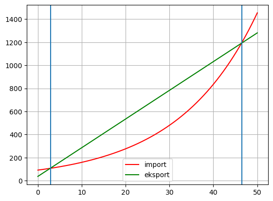
Dvs. det er handelsoverskot ca. frå starten av 1983 til midt i 2026 ut frå modellane.
Oppgåve 4
Tenk deg at du har ein terning med n sider der talet på auge på sidene er \(1, 2, ... , n\). Når du kastar terningen, er alle utfalla like sannsynlege. Du kastar terningen to gonger. La \(X\) vere produktet av talet på auge i dei to kasta. Dersom til dømes første kast gir 7 og andre kast gir 3, blir \(X\) lik \(3\cdot 7 = 21\).
Startar med å la \(n=10\) og prøver å finna \(P(X > 60)\)
import numpy as nprng = np.random.default_rng()N =1000000n =10# triller ternignart1 = rng.integers(1, n+1, size=N)t2 = rng.integers(1, n+1, size=N)# finn produktet av dei to kastaprod = t1 * t2# finn gunstige utfall og sannsynetgunstige =sum(prod >60)sannsyn = gunstige / Nprint(f"Når n = 10: \nP(X > 60) = {sannsyn:.4f}")
Når n = 10:
P(X > 60) = 0.1302
Så vil me finna ut kva den minste verdien av \(n\) som gjer at \(P(X>60) > 0.5\) er. Bruker koden vidare, men gjer han om til ein funksjon med input n og output sannsyn. Då kan ein prøva seg fram med ei while-løkke.
def trilling(n): N =1000000# triller ternignar t1 = rng.integers(1, n+1, size=N) t2 = rng.integers(1, n+1, size=N)# finn produktet av dei to kasta prod = t1 * t2# finn gunstige utfall og sannsynet gunstige =sum(prod >60) sannsyn = gunstige / Nreturn sannsyn# Prøver oss framn =10while trilling(n) <0.5: n +=1print(f"n = {n}: \nP(X > 60) = {trilling(n):.4f}")
n = 17:
P(X > 60) = 0.5062
17 er altså den minste verdien \(n\) kan ha for at \(P(X>60) > 0.5\).
Oppgåve 5
Arnt har fått ein sjukdom og må ta ein tablett som inneheld 100 mg av eit verkestoff. Funksjonen \(f\) gitt ved \[f(t)=100\cdot e^{−0,012t}\] er ein modell for kor mykje av verkestoffet til tabletten som er igjen i kroppen \(t\) timar etter at han tok den.
Først skal me finna ut kor mykje stoff som er i kroppen 24 timar etter at han har tatt ein tabelett.
Startar med å definera funksjonen.
import numpy as npdef f(t):return100* np.exp(-0.012*t)etter24 = f(24)print(f"Verkestoff etter 24 timar: {etter24:.2f} mg")
Verkestoff etter 24 timar: 74.98 mg
Vidare får me opplyst at
Arnt tek ein tablett kvar morgon klokka åtte. La \(g\) vere ein funksjon som beskriv mengda verkestoff han har i kroppen \(t\) timar etter at han tok den første tabletten.
Det skal argumenterast for om \(g\) er ein kontinuerlig funksjon eller ikkje.
At den nye tabeletten skal bli tatt opp umiddelbart (at nivå verkestoff i kroppen gjer eit hopp med 100 mg) er litt vanskeleg å sjå for seg om ein tenker at “i kroppen” = “i blodet”. Om ein tenker at “i kroppen” er innafor munnen, så kan ein argumentera for at funksjonen er diskontinuerleg med eit slikt hopp…
Så skal me finna ut kor mykje verkestoff Arnt har i kroppen like før den 6. tabletten. Bruker funksjonen frå tidlegare. Hugs at \(t\) er timar her og ikkje døgn. Startar på 1 sidan den “nyaste” tabeletten (nr. 5) har vore eitt døgn i kroppen.
verkestoff =0for i inrange(1, 6): verkestoff += f(i*24)print(f"Rett før tab.nr. 6 er det {verkestoff:.2f} mg i kroppen")
Rett før tab.nr. 6 er det 228.63 mg i kroppen
Til slutt skal me finna ut kor mykje verkestoff Arnt vil ha i kroppen om han tek ein tablett i døgnet over eit lengre tidsrom. Bruker funksjonen og løkka frå tidlegare. Startar på 0 no sidan me ikkje lenger ser på “rett før” ein tablett. Prøver meg fram for å finna ut kor langt fram me må sjå for å finna taket.
Dag 1: 100.00 mg
Dag 2: 174.98 mg
Dag 3: 231.19 mg
Dag 4: 273.34 mg
Dag 5: 304.94 mg
Dag 6: 328.63 mg
Dag 7: 346.39 mg
Dag 8: 359.71 mg
Dag 9: 369.70 mg
Dag 10: 377.19 mg
Dag 11: 382.80 mg
Dag 12: 387.01 mg
Dag 13: 390.16 mg
Dag 14: 392.53 mg
Dag 15: 394.30 mg
Dag 16: 395.63 mg
Dag 17: 396.63 mg
Dag 18: 397.38 mg
Dag 19: 397.94 mg
Dag 20: 398.36 mg
Dag 21: 398.67 mg
Dag 22: 398.91 mg
Dag 23: 399.09 mg
Dag 24: 399.22 mg
Dag 25: 399.32 mg
Det ser ut som Arnt ikkje vil overstiga 400 mg verkestoff i kroppen på lang sikt.
Oppgåve 6
Ein funksjon \(f\) er gitt ved \[f(x)=2x+5+\frac{1}{x-1}\]
Løyser oppgåva i CAS.
a) For kva verdiar av \(k\) har likninga \(f'(x)=k\) løysing?
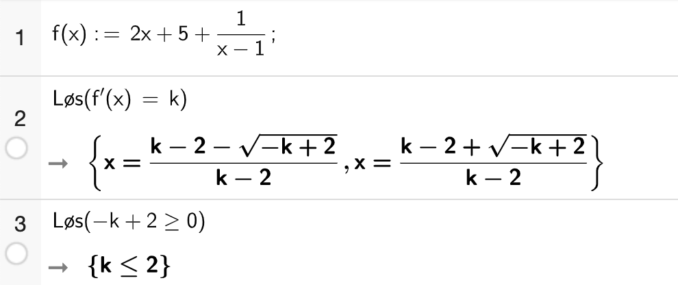
📷 Skjermbilete av CAS
Løyser liknigna. Ser at \(k=2\) gir \(0\) i nemnar.
Likninga har løysing for \(k<2\)
b) Vel ulike verdiar av \(k\), og beskriv symmetrien i løysingane av likninga \(f'(x)=k\) for kvar av desse verdiane
Prøver tre ulike verdiar for \(k\) og ser at alle er symmetriske om linja \(x=1\).
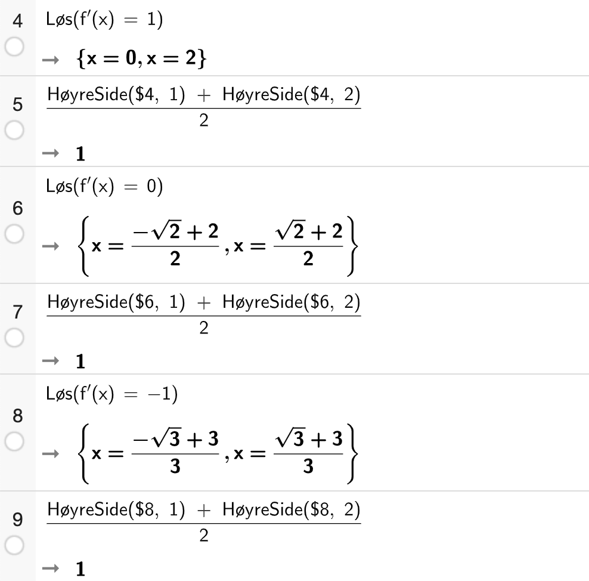
📷 Skjermbilete av CAS
La \(g\) vere ein funksjon som kan skrivast på forma \[g(x)=a\cdot x + b + \frac{1}{x+d}\]
c) For kva verdiar av \(a\) har likninga \(g'(x)=4\) løysing?
Løyser likninga og ser at likninga har løysing når \(a>4\).
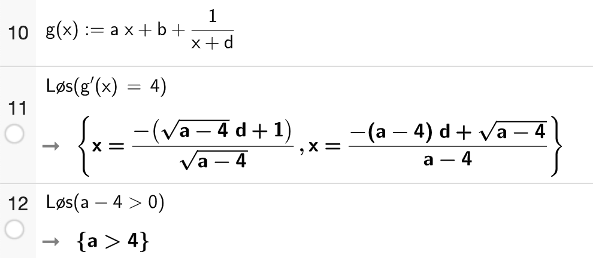
📷 Skjermbilete av CAS
La no \(a=3\).
d) Utforsk og beskriv løysingane til likninga \(g'(x)=k\) for ulike verdiar av \(k\).
Ser at no er løysingane symmetriske om \(x=-d\).
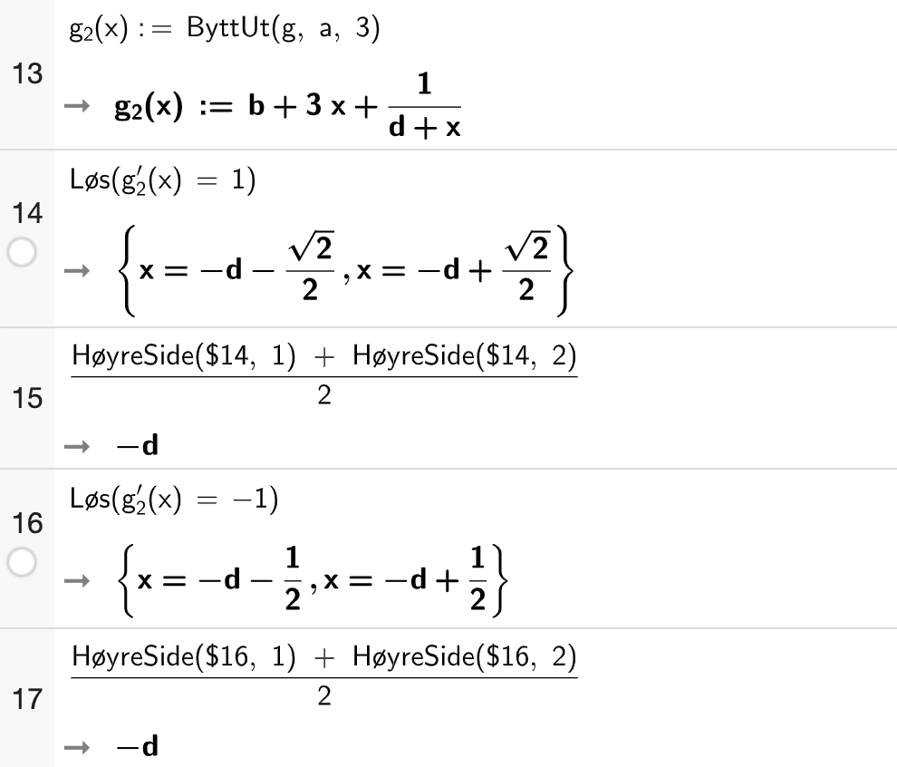
📷 Skjermbilete av CAS
e) Bestem \(b\) og \(d\) slik at \(g'(-1)=g'(5)\) og \(g(1)=7\).
Dersom \(g'(-1)=g'(5)\) må løysingane til likninga \(g'(x)=k\) vera symmetrisk om \(x=\frac{-1+5}{2}=2\). Dvs. \(-d=2 \Rightarrow d = -2\).
Då er \[g(x) = 3x + b + \frac{1}{x-2}\] og vidare finn me \(b\) ved å løysa likninga \(g(1)=7\)
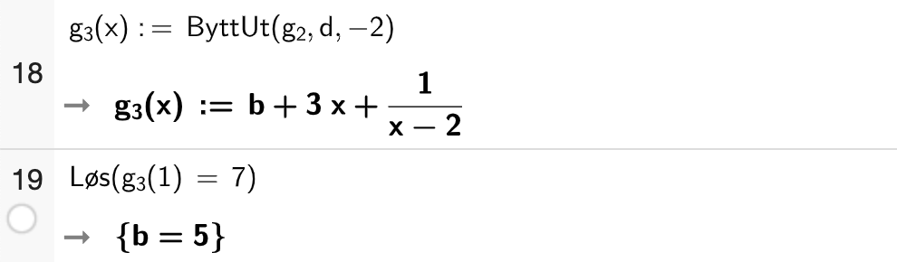
📷 Skjermbilete av CAS
Og me står att med \[g(x) = 3x + 5 + \frac{1}{x-2}\]